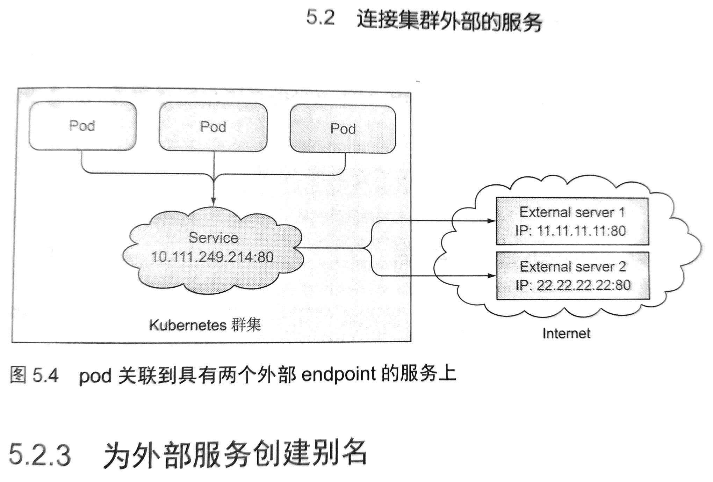

Endpoint 详解
Page content
What’s Endpoint
- Service和Pod 并没有直接相连。
- Service和Pod 之间还有个Endpoint资源
- Endpoint 就是 Pod暴露服务的IP和port的对应关系。
- 在service的spec中的确定义了 labels selector，但是service并不会直接连接pods 上暴露的port。而是使用了Endpoint列表
- 如果创建了一个service且不包含pod selector，则需要手动创建Endpoint资源。（如果有pod selector，Endpoint默认会自动创建的）
- 这里其实可以创建external service。
关于服务/外部服务的问题
- external service可以利用k8s的负载均衡和服务发现功能
- external service不包含nodeselector，创建service之后直接创建Endpoint来指定地址和port的信息。
[root@docker-host0 kube]# kubectl get ep
NAME ENDPOINTS AGE
kubernetes 192.168.99.103:8443 5h53m
kubia 172.17.0.10:8080,172.17.0.8:8080,172.17.0.9:8080 107m
[root@docker-host0 kube]# kubectl describe svc kubia
Name: kubia
Namespace: default
Labels: <none>
Annotations: <none>
Selector: app=kubia
Type: ClusterIP
IP: 10.110.84.76
Port: <unset> 80/TCP
TargetPort: 8080/TCP
Endpoints: 172.17.0.10:8080,172.17.0.8:8080,172.17.0.9:8080
Session Affinity: None
Events: <none>
手动创建Endpoint
apiVersion: v1
kind: Endpoints
metadata:
name: external-service #<<< 这里的名字必须和service一样，才能彼此关联
subsets:
- addresses:
- ip: 11.11.11.11
- ip: 22.22.22.22
ports:
- port: 80
- 为了方便内部Pod访问外部服务，完全可以在k8s中创建一个服务，关联Endpoint来暴露外部服务
- 效果图如下所示： 
Endpoint和service如何关联？
- endpoint 的 name必须和service相同，彼此才能关联。
- 默认情况下service会自动创建一个同名的Endpoint来映射服务和pod的ip port。
为外部服务创建别名（CNAME DNS）
需求
- 例如公网有一个api server 地址为： api.example.com
- Pods可能会使用这个api server
- Pods使用这个api server的时候希望使用内部domain(hostname)进行访问
原理
- 在k8s的内部dns服务中，添加了一条指向外部服务的cname记录
- 例如映射 external-api-server到 api.example.com上
yaml example:
apiVersion: v1
kind: Service
metadata:
name: external-api-server
spec:
type: ExternalName #<<< 这里是关键字，默认情况下 service type是ClusterIP，因为会有selector和Endpoint
externalName: api.example.com
ports:
- port: 80
效果
- 这时候，Pods可以像使用内部service一样使用这个external service
- 方便了后续的api地址修改或者替换。
- 默认情况下